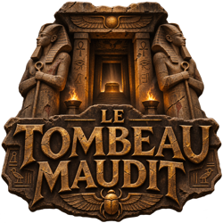
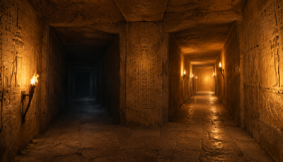
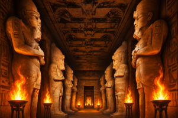
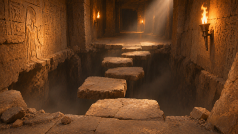

<!DOCTYPE html>
<html>

<!DOCTYPE html>
<html>

<head>
  <title>LE TOMBEAU MAUDIT</title>
  <meta charset="utf-8" />
  <link rel="stylesheet" href="https://unpkg.com/bootstrap/dist/css/bootstrap.min.css">

  <!-- JQuery téléchargement -->
  <script src="https://unpkg.com/jquery/dist/jquery.min.js"></script>
  <script src="https://unpkg.com/jquery-ui/dist/jquery-ui.min.js"></script>

  <!-- adapter le thème choisir :  -->
  <link rel="stylesheet" href="https://unpkg.com/jquery-ui/dist/themes/humanity/jquery-ui.min.css">

  <!-- ajouter balise de style -->
  <link rel="stylesheet" href="style.css">
  <!-- preload music et image de fond -->
  <link rel="preload" href="ambiance_fond.mp3" as="audio" type="audio/mpeg" fetchpriority="high">
  <link rel="preload" href="fond.png" as="image" type="image/png" fetchpriority="high">

</head>

<body>


  <script>

    $(document).ready(
      function () {
        // écrire le JQuery ici
        console.log('*** JQuery ' + $.fn.jquery + ' prêt ***')
        // Fstop
        let Fstop = function () {
          $('#idFX').remove()
        } //fin Fstop

        // Fplay
        let Fplay = function (Pfile) {
          let oAudio = $('<audio autoplay id="idFX"> <source src="' + Pfile + '"></audio>')
          $('body').append(oAudio)
        } //fin Fplay

        // FplayZIK : démarre la musique de fond en boucle + bouton Pause
        let FplayZIK = function () {
          let oAudio = $('<audio autoplay loop id="idZIK"><source src="ambiance_fond.mp3"></audio>')
          $('body').append(oAudio)
          $('#idBTzik').remove()
          let oBT = $('<button id="idBTzik">Pause</button>')
          $('body').append(oBT)
          oBT.on('click', FpauseZIK)
        } //fin FplayZIK

        // FpauseZIK : met la musique en pause + bouton Continue
        let FpauseZIK = function () {
          let oAudio = $('#idZIK')
          let jsAudio = oAudio[0]
          jsAudio.pause()
          $('#idBTzik').remove()
          let oBT = $('<button id="idBTzik">Continue</button>')
          $('body').append(oBT)
          oBT.on('click', FcontinueZIK)
        } //fin FpauseZIK

        // FcontinueZIK : reprend la musique + bouton Pause
        let FcontinueZIK = function () {
          let oAudio = $('#idZIK')
          let jsAudio = oAudio[0]
          jsAudio.play()
          $('#idBTzik').remove()
          let oBT = $('<button id="idBTzik">Pause</button>')
          $('body').append(oBT)
          oBT.on('click', FpauseZIK)
        } //fin FcontinueZIK

         // FstopZIK : arrête la musique et retire le bouton
        let FstopZIK = function () {
          $('#idBTzik').remove()
          $('#idZIK').remove()
        } //fin FstopZIK

        // Debut de Fscene1 
        let Fscene1 = function () { // début Fscene1
          //Stopper la musique de fond 
          FstopZIK()
          // Stopper le son
          Fstop()

          let shtml = '<div>'
          shtml += '<p>Tu incarnes un explorateur entré dans une pyramide à la recherche d\'un trésor.<br>La porte se referme derrière toi. <br> Pour sortir, tu dois traverser plusieurs salles, découvrir des indices,récupérer un objet indispensable et résoudre une dernière énigme avant que les murs ne t\'écrasent.</p>'
          shtml += '<hr/>'
          shtml += '<center></center>'
          shtml += '</div>'

          let oBouton = {
            'Départ': function () { $(this).on('dialogclose', Fscene2).dialog('close').dialog('destroy').remove() },
            'Fin': function () { $(this).dialog('close').dialog('destroy').remove() }
          }


          let oOption = {
            buttons: oBouton,
            title: 'LE TOMBEAU MAUDIT',
            show: { effect: 'blind' },
            width: 600
          }

          $(shtml).dialog(oOption)


        } // fin Fscene1

        // Fscene2 : l'entrée de la pyramide (Scène 1 de l'arbre)
        let Fscene2 = function () { // début Fscene2
          // Stopper précédents sons
          Fstop()
          // Jouer le son de fond
          FplayZIK()
          // Jouer le bruit de la scene 
          Fplay('scene1_porte.mp3')

          let shtml = '<div>'
          shtml += '<p>La porte se referme derrière toi dans un grand bruit.<br>Devant toi, deux couloirs : l\'un est éclairé par des torches, l\'autre est plongé dans le noir.</p>'
          shtml += '<hr/>'
          shtml += '<center></center>'
          shtml += '</div>'

          oBouton = {
            'Couloir éclairé': function () { $(this).on('dialogclose', Fscene3).dialog('close').dialog('destroy').remove() },
            'Couloir sombre': function () { $(this).on('dialogclose', Fscene4).dialog('close').dialog('destroy').remove() }
          }

          oOption = {
            buttons: oBouton,
            title: 'L\'entrée de la pyramide',
            show: { effect: 'blind' },
            width: 600
          }

          $(shtml).dialog(oOption)
        } // fin Fscene2

        // Fscene3 : la salle des statues (Scène 2 de l'arbre)
        let Fscene3 = function () { // début Fscene3
          // Stopper précédents sons
          Fstop()
          // Jouer les sons
          Fplay('scene2_torches.mp3')

          let shtml = '<div>'
          shtml += '<p>Tu entres dans la salle des statues. Ramsès II et Toutânkhamon te regardent.<br>Au pied d\'une statue, tu vois une clé d\'ânkh.<br>Deux passages s\'ouvrent devant toi.</p>'
          shtml += '<hr/>'
          shtml += '<center></center>'
          shtml += '</div>'

          oBouton = {
            // Ramasser la clé : on reste dans la scène
            'Ramasser la clé d\'ânkh': function () { $(this).on('dialogclose', Fscene3).dialog('close').dialog('destroy').remove() },
            'Passage de gauche': function () { $(this).on('dialogclose', Fscene4).dialog('close').dialog('destroy').remove() },
            // Ensuite : Fscene5 (la chambre du trésor)
            'Passage de droite': function () { $(this).on('dialogclose', Fscene5).dialog('close').dialog('destroy').remove() }
          }

          oOption = {
            buttons: oBouton,
            title: 'La salle des statues',
            show: { effect: 'blind' },
            width: 600
          }

          $(shtml).dialog(oOption)
        } // fin Fscene3

        // Fscene4 : le couloir des pièges (Scène 3 de l'arbre)
        let Fscene4 = function () { // début Fscene4
          // Stopper précédents sons
          Fstop()
          // Jouer les sons
          Fplay('scene3_pieges.mp3')

          let shtml = '<div>'
          shtml += '<p>Le sol s\'est effondré. Seuls quelques blocs de pierre flottent au-dessus du vide.<br>Une voix résonne : « Pour traverser, donne le nom d\'un des deux pharaons qui gardent la salle des statues. »<br>Un mauvais nom et le bloc s\'enfonce...</p>'
          shtml += '<hr/>'
          shtml += '<center></center>'
          shtml += '</div>'

          oBouton = {
            // Retour à la salle des statues
            'Faire demi-tour': function () { $(this).on('dialogclose', Fscene3).dialog('close').dialog('destroy').remove() },
            // Bonnes réponses : Ensuite : Fscene5 (la chambre du trésor)
            'Ramsès II': function () { $(this).on('dialogclose', Fscene5).dialog('close').dialog('destroy').remove() },
            'Toutânkhamon': function () { $(this).on('dialogclose', Fscene5).dialog('close').dialog('destroy').remove() },
            // Mauvaise réponse : on reste dans le couloir
            'Khéops': function () { $(this).on('dialogclose', Fscene4).dialog('close').dialog('destroy').remove() }
          }

          oOption = {
            buttons: oBouton,
            title: 'Le couloir des pièges',
            show: { effect: 'blind' },
            width: 600
          }

          $(shtml).dialog(oOption)
        } // fin Fscene4

        // Fscene5 : la chambre des trésors (Scène 4 de l'arbre)
        let Fscene5 = function () { // début Fscene5
          // Stopper précédents sons
          Fstop()
          // Jouer les sons
          Fplay('scene4_tresor.mp3')

          let shtml = '<div>'
          shtml += '<p>Tu arrives dans une salle remplie de pièces d\'or et d\'objets précieux.<br>Au centre se trouve un magnifique scarabée doré posé sur un autel.<br>Le scarabée semble particulièrement précieux, mais un passage au fond de la salle semble mener vers la sortie.</p>'
          shtml += '<hr/>'
          shtml += '<center></center>'
          shtml += '</div>'

          oBouton = {
             // Mauvaise réponse : Défaite
            'Prendre le scarabée': function () { $(this).on('dialogclose', Fscene7).dialog('close').dialog('destroy').remove() },
            // Bonnes réponses : Laisser le scarabée et continuer
            'Laisser le scarabée et continuer': function () { $(this).on('dialogclose', Fscene6).dialog('close').dialog('destroy').remove() },
             // Retourner explorer les autres salles
            'Faire demi-tour': function () { $(this).on('dialogclose', Fscene3).dialog('close').dialog('destroy').remove() },
          }

          oOption = {
            buttons: oBouton,
            title: 'La chambre des trésors',
            show: { effect: 'blind' },
            width: 600
          }

          $(shtml).dialog(oOption)
        } // fin Fscene5

        // Invoquer Fscene1 pour démarrer le jeu
        Fscene1()

      })// fin du JQuery

  </script>
</body>

</html>